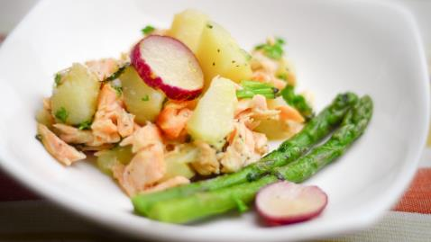

Hot Smoked Salmon Salad
Nutritional Facts (per serving)
Calories
363
Calories 363 | Total Fat 29g | Saturated Fat 2.7g | Carbohydrates 7.1g | Fibre 1.6g | Protein 2.7g
Serves: 4
Ingredients
- 4 salmon steaks, hot (smoked, skinned)
- 100g new potatoes, cooked and chopped (use celeriac if you are on a very low carb diet)
- 100g asparagus tips
- 2 tsp. parsley, finely chopped
- 2 tsp. mint leaves, finely chopped
- 2 spring onions, chopped
- 70g radishes
- 1� tbsp. lemon juice
- 75ml olive oil
Method
Step 1: Half-fill a medium sized pan with water and bring to the boil..
Step 2: Lower the heat, and pop the potatoes in.
Step 3: Leave to cook for 7 minutes.
Step 4: Place the asparagus tips in the same water for 2 minutes towards the end, adding a little more water if necessary.
Step 5: Drain the water and wait for the potatoes and asparagus to cool.
Step 6: Slice the asparagus, potatoes, salad, onions, radishes and herbs and put aside in a large bowl.
Step 7: Mix the lemon juice and olive oil well in a small bowl to make a dressing.
Step 8: For the final touch, drizzle with the rest of the dressing.